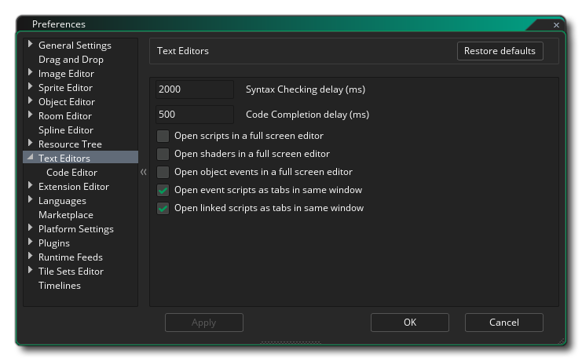
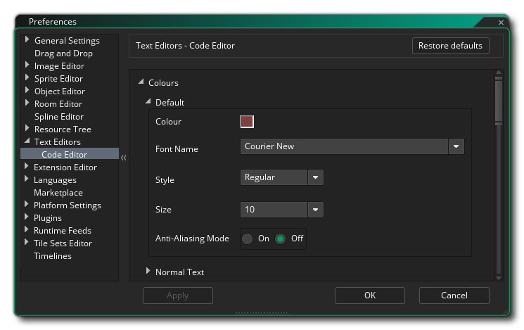
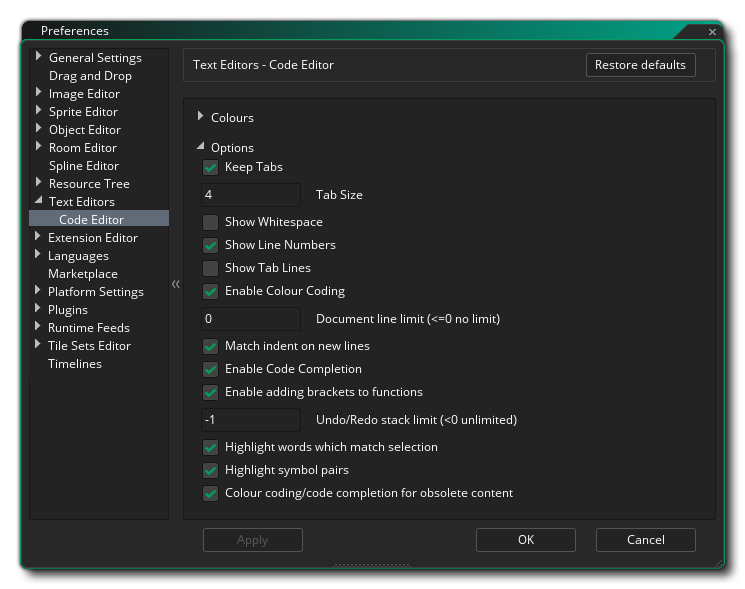

The Text Editors Preferences are used to define how the different code/script editors look and feel. The main page has the following options:
Apart from the options above there are also two sub-categories for the code and dialog editor preferences (shown together below as the preferences are exactly the same for both):
The Colour preferences are used to change how the code and script editor display different texts. Each entry has a number of sub-entries to permit you to define exactly how each separate piece of text should look, as shown in the example image above. In general, you can set the colour, font, size and style for each of the different options. Further down you can also set more general styling for things like line selection of code brackets, etc... 
Under the colour preferences you have the different styling Options. These preferences are used to set the behaviour of the code/script editor, with the following options available:
- Keep tabs: If checked, this will keep tab key presses as tab characters - '\t' - in the editor, while unchecked means that tabs are converted into spaces. Default is off.
- Tab size: The number of character spaces that pressing "Tab" should indent the code. Default is 4.
- Show Whitespace: Display "." to show whitespace (see image below). Default is off.
- Show line numbers: Whether to show the line numbers down the left or not. Default is on.
- Show tab lines: Display "...." to show tabbed space. Default is off.
- Enable colour coding: Enable or disable colour coding for the editor. If off, the code will not be styled, while when on it will be styled using the formatting given above in the Colour section. Default is on.
- Document line limit: Set the maximum number of lines for any given editor document. The default value is 0 (0 or less is essentially infinite) and any other value will limit the lines permitted.
- Match indent on new lines: Enable or disable auto-indentation for your code. Default is on, which will maintain any tabs set on a line when a new line is added.
- Auto indent after brace: Enable or disable auto-indentation for your code when adding braces {}. Default is on, which will tab the next line of code when a new brace { and a new line are added.
- Enable code completion: Enable or disable the code completion window. When writing code and this is enabled, you will get a popup window showing possible functions that you can use based on the current input text. Default is on.
- Auto add function brackets: Enable or disable the automatic addition of brackets () when you use the autocomplete. When writing code and this is enabled, the IDE will automatically add the two brackets () that a function requires, placing the cursor within them if the function takes arguments, or placing the cursor after them if it does not. This feature only works when the function has been selected from the autocomplete. Default is on.
- Undo / Redo Stack Limit: Here you can set the Undo/Redo stack limit. Anything under 0 is essentially infinite (limited by the memory available) while positive values will limit the stack to that number, removing any action at the tail of the stack if the limit is reached. Default is -1.
- Highlight selection matches: This will lightly highlight any section of code that is duplicated elsewhere. So, if you select a function, for example, all instances of this function in the current code window will be highlighted too. Default is on.
- Colour coding/code completion for obsolete functions: This will highlight any section of code that is obsolete. Default is on.